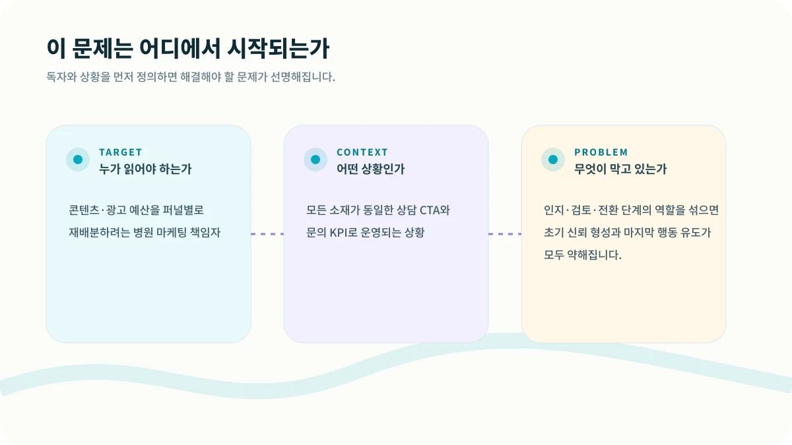
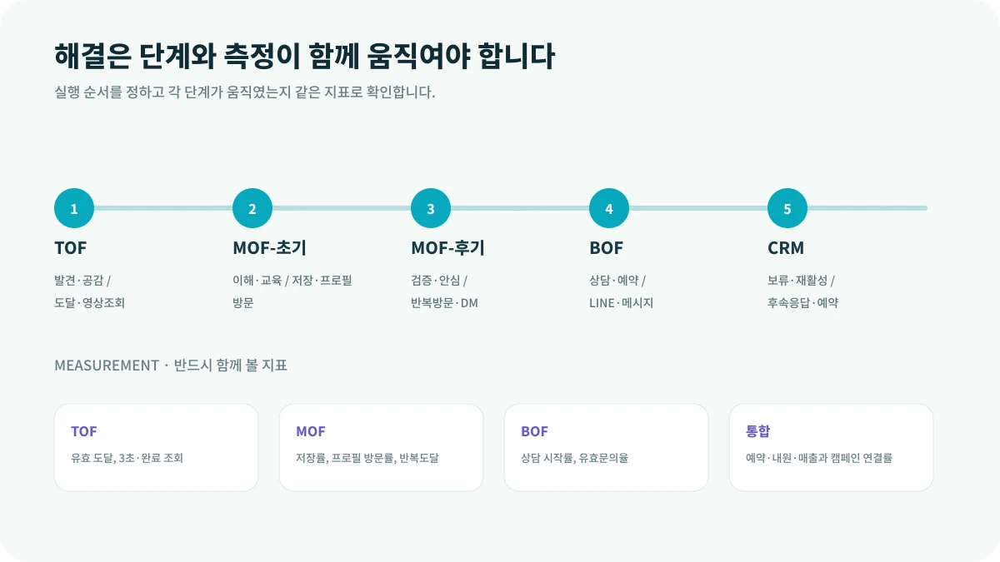

모든 게시물 끝에 ‘지금 상담하세요’를 붙인다고 상담이 늘지는 않습니다. 아직 병원을 처음 본 사람에게 예약을 요구하면 너무 빠르고, 이미 비교를 마친 사람에게 브랜드 이야기만 반복하면 너무 느립니다.
이 글은 콘텐츠·광고 예산을 퍼널별로 재배분하려는 병원 마케팅 책임자에게 특히 필요합니다. 지금처럼 모든 소재가 동일한 상담 CTA와 문의 KPI로 운영되는 상황이라면, 먼저 숫자를 늘리기보다 문제의 구조를 다시 볼 필요가 있습니다.

CORE INSIGHT핵심은 관점을 바꾸는 것입니다
같은 코 성형 주제라도 처음 보는 사람에게는 고민을 설명하는 짧은 영상이, 비교 중인 사람에게는 의료진 판단 기준이, 상담 직전 사람에게는 필요한 사진과 답변 시간 안내가 필요합니다. 콘텐츠 주제가 아니라 환자 상태가 CTA를 결정합니다.
WHY IT HAPPENS왜 이런 일이 반복될까요?
1. 관심 없는 사람에게 예약을 요구하지 않습니다
초기에는 문제를 인식하고 병원을 기억하게 만드는 것이 우선입니다.
2. 검토 단계에는 판단 근거가 필요합니다
의료진 관점, 적합·부적합 기준, 과정, 예상 질문이 비교와 신뢰를 돕습니다.
3. 전환 단계에서는 마찰을 줄입니다
상담 방법, 필요한 정보, 답변 시간, 방문 절차를 명확히 해 행동 부담을 낮춥니다.
HOW TO SOLVE현장에서는 이렇게 풀어야 합니다
해결은 한 번의 캠페인이나 담당자의 노력만으로 완성되지 않습니다. 다음 다섯 단계를 하나의 흐름으로 연결하고, 단계가 바뀔 때마다 기록을 남겨야 합니다.

MEASUREMENT무엇을 측정해야 할까요?
결과만 보면 문제가 발생한 위치를 알 수 없습니다. 아래 지표를 같은 기간과 같은 정의로 추적하면 어느 단계가 실제 병목인지 확인할 수 있습니다.
| TOF | 유효 도달, 3초·완료 조회 |
|---|---|
| MOF | 저장률, 프로필 방문률, 반복도달 |
| BOF | 상담 시작률, 유효문의율 |
| 통합 | 예약·내원·매출과 캠페인 연결률 |
START THIS WEEK이번 주에 바로 확인할 네 가지
퍼널을 나누는 목적은 캠페인 이름을 복잡하게 만드는 것이 아닙니다. 환자에게 지금 필요한 한 가지 정보를 제공하고, 부담 없는 다음 행동을 제안하기 위해서입니다.
GUARDRAIL실행 전에 반드시 확인할 점
본 콘텐츠는 병원 사업·운영을 위한 일반 정보이며, 의료·법률·세무 자문을 대체하지 않습니다. 실제 적용 시 관련 전문가와 최신 법령을 확인해야 합니다.
현재 병원의 병목을 함께 찾아보세요.
시장·마케팅·상담·CRM·운영 중 어디에서 성장이 멈추는지 구조적으로 진단합니다.